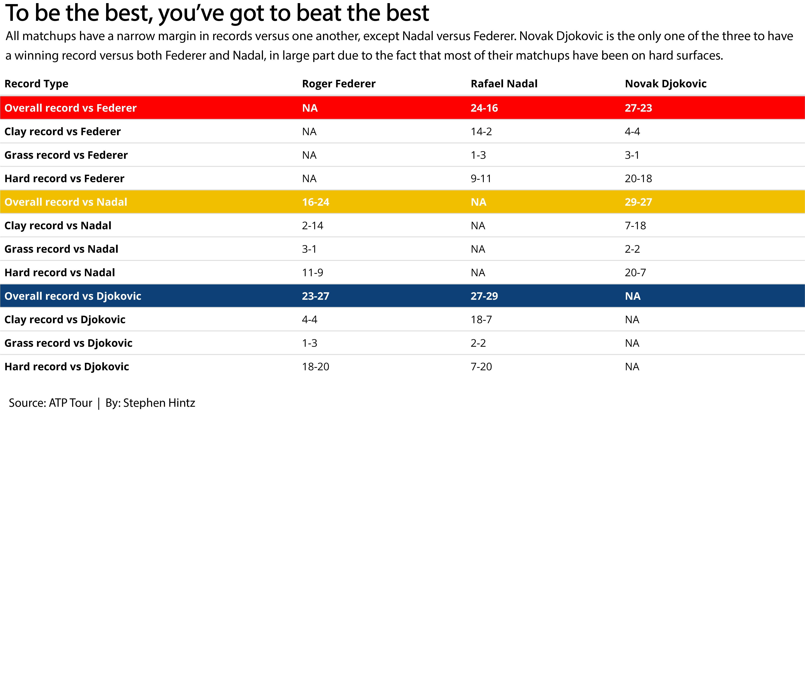

It’s a question often debated in sports: who’s the “GOAT”?
So often this prompt is investigated in the context of basketball with LeBron James versus Michael Jordan, or football with Tom Brady or some other historical quarterback. The problem with these? No one will ever know because they never played head-to-head, and never will in their primes.
That’s why the time we’re living in right now for tennis is so unique. Arguably the three best tennis men’s players of all time are all playing and are only four years apart in age. This scenario opens the door for a productive conversation to find who is truly the greatest men’s tennis player of all time.
Furthermore, tennis is an individual sport. Often in other “GOAT” discussions, there is the argument that teammates aided in the success of some of the stars. In tennis, it is just the player who does all the work and only gets assistance from the crowd and his/her coach.
Here, I will take an in-depth look at the numbers to determine who is the GOAT of men’s tennis.
library(tidyverse)## ── Attaching packages ─────────────────────────────────────── tidyverse 1.3.0 ──## ✓ ggplot2 3.3.3 ✓ purrr 0.3.4
## ✓ tibble 3.0.5 ✓ dplyr 1.0.3
## ✓ tidyr 1.1.2 ✓ stringr 1.4.0
## ✓ readr 1.4.0 ✓ forcats 0.5.0## ── Conflicts ────────────────────────────────────────── tidyverse_conflicts() ──
## x dplyr::filter() masks stats::filter()
## x dplyr::lag() masks stats::lag()library(kableExtra)##
## Attaching package: 'kableExtra'## The following object is masked from 'package:dplyr':
##
## group_rowslibrary(ggrepel)
library(cowplot)returnstats <- read_csv("Career Return Stats - Sheet1-2.csv")##
## ── Column specification ────────────────────────────────────────────────────────
## cols(
## Player = col_character(),
## `Return Rating` = col_character(),
## `% 1st Serve Return Points Won` = col_character(),
## `% 2nd Serve Return Points Won` = col_character(),
## `% Return Games Won` = col_character(),
## `% Break Points Converted` = col_character(),
## Surface = col_character()
## )servestats <- read_csv("Career Serve Stats - Sheet1-2.csv")##
## ── Column specification ────────────────────────────────────────────────────────
## cols(
## Player = col_character(),
## `Serve Rating` = col_character(),
## `% 1st Serve` = col_character(),
## `% 1st Serve Points Won` = col_character(),
## `% 2nd Serve Points Won` = col_character(),
## `% Service Games Won` = col_character(),
## `Aces Per Match` = col_character(),
## `Avg Double Faults/Match` = col_character(),
## Surface = col_character()
## )I will be using stats from the ATP Tour’s website that show every player’s career stats in service and return dating back to 1991.
An important note: serve rating is a formula that adds four service metrics percentages (% 1st Serve Landed, % 1st Serve Points Won, % 2nd Serve Points Won, % Service Games Won) plus the average number of aces per match and minus the average number of double faults per match.
Return rating is determined by adding a player’s winning percentage in the four major service return categories (% 1st Serve Return Points won, % 2nd Serve Return Points won, % Return Games Won, % Break Points Converted).
First, I must do some necessary cleaning of the data to omit any missing entries in the data set for the stats on all surfaces.
returnstats %>% mutate(`Return Rating` = as.numeric(`Return Rating`)) %>% filter(Surface=="All") %>% na.omit() -> returnleadersall## Warning: Problem with `mutate()` input `Return Rating`.
## ℹ NAs introduced by coercion
## ℹ Input `Return Rating` is `as.numeric(`Return Rating`)`.servestats %>% mutate(`Serve Rating` = as.numeric(`Serve Rating`)) %>% filter(Surface=="All") %>% na.omit() -> serveleadersall## Warning: Problem with `mutate()` input `Serve Rating`.
## ℹ NAs introduced by coercion
## ℹ Input `Serve Rating` is `as.numeric(`Serve Rating`)`.Next, I need to find the average serve and return rating by taking the mean serve and return rating for every player in the data set. This will be useful for comparison later on.
serveleadersall %>% summarise(AvgServe = mean(`Serve Rating`)) ## # A tibble: 1 x 1
## AvgServe
## <dbl>
## 1 256.returnleadersall %>% summarise(AvgReturn = mean(`Return Rating`))## # A tibble: 1 x 1
## AvgReturn
## <dbl>
## 1 139.I will combine the serve and return ratings into one data set to make a scatterplot so I joined my data set for serve rating and return rating into a set called “servereturn”.
servereturn <- returnleadersall %>% left_join(serveleadersall)## Joining, by = c("Player", "Surface")To separate the ‘Big Three’ from the rest of the pack I will make a list of just Roger Federer, Rafael Nadal, and Novak Djokovic. Then, I’m going to filter out their stats from the list of every player’s serve and return ratings, to help me highlight their excellence.
Big3 <- c("Rafael Nadal", "Novak Djokovic", "Roger Federer")B3 <- servereturn %>% filter(Player %in% Big3)I’m interested in looking at where the ‘Big Three’ stand in comparison to everyone else who has their stats in my database. To show this, I’m going to make a scatterplot with every player’s data, and I will highlight only Djokovic, Nadal, and Federer.
I’m going to put serve rating on the x-axis and return rating on the y-axis. I also want to include the averages I found earlier as the vertical line on the x-axis to represent average serve rating and the horizontal line on the y-axis to represent average return rating.
Reminder: Serve rating=(% 1st Serve Landed, % 1st Serve Points Won, % 2nd Serve Points Won, % Service Games Won + Average Aces per Match - Average Double Faults per Match) Return Rating=(% 1st Serve Return Points won + % 2nd Serve Return Points won + % Return Games Won + % Break Points Converted)
ggplot() +
geom_point(data=servereturn, aes(x=`Serve Rating`, y=`Return Rating`), color="light grey") +
geom_point(data=B3, aes(x=`Serve Rating`, y=`Return Rating`, color= "red")) +
geom_hline(yintercept=138.6383, color="dark grey") +
geom_vline(xintercept=255.5443, color="dark grey") +
geom_text(aes(x=307, y=165, label=
"Good Serve,
Good Return"), color="blue") +
geom_text(aes(x=225, y=105, label=
"Bad Serve,
Bad Return"), color="blue") +
geom_text_repel(data=B3, aes(x=`Serve Rating`, y=`Return Rating`, label=Player))+
labs(x="Serve Rating", y="Return Rating", title="The 'Big Three' stand far apart from the rest", subtitle="Federer has the best serve, but Nadal is the best all-around on all surfaces.", caption="Source: atptour.com | By Stephen Hintz") +
theme_minimal() +
theme(
plot.title = element_text(size = 20, face = "bold"),
axis.title = element_text(size = 10),
axis.text = element_text(size = 7),
axis.ticks = element_blank(),
panel.grid.minor = element_blank(),
panel.grid.major.x = element_blank(),
legend.position = "none"
) We see a few important pieces from this chart. The first is that to be a great player, you must have a good serve and return game. There are many players who rank high in either serve or return alone, but they are left out of the “good serve, good return” quadrant because they lack in one area.
We see a few important pieces from this chart. The first is that to be a great player, you must have a good serve and return game. There are many players who rank high in either serve or return alone, but they are left out of the “good serve, good return” quadrant because they lack in one area.
We also see that no one even comes close to the ‘Big Three’ when it comes to both serve and return rating. Federer has the best serve of the three but lacks in return rating compared to Djokovic and Nadal. Additionally, Nadal has both a better serve and return than Djokovic does with points out that he is the best all-around player.
Now, let’s take a closer look at who ranks in the top 10 all-time in cumulative serve-return rating. I will do this by adding every player’s serve rating and return rating and creating a top 10 list.
servereturntop <- servereturn %>% mutate(ServePlusReturn = (`Serve Rating` + `Return Rating`)) %>% top_n(10)## Selecting by ServePlusReturnservereturntop %>%
select(Player, `Serve Rating`, `Return Rating`) %>%
pivot_longer(
cols = -Player,
names_to="Type",
values_to="Rating") -> servereturnchartI’m interested in seeing how the current three stack up against all-time greats such as Pete Sampras, Andre Agassi, and others, so this top 10 chart will show me the best players based on career statistics on all surfaces.
ggplot(servereturnchart, aes(x=reorder(Player, Rating), weight=Rating, fill=Type)) +
geom_bar() +
coord_flip() + labs(x="Player", y="Cumulative Serve-Return Rating", title="The 'Big Three' does it all the best, historically ", subtitle="Among all-time tennis legends, the 'Big Three' sit at the top in \ncumulative serve-return ratings.", caption="Source: ATP Tour | By Stephen Hintz") +
theme_minimal() +
theme(
plot.title = element_text(size = 18, face = "bold"),
axis.title = element_text(size = 10),
plot.subtitle = element_text(size = 12),
axis.text = element_text(size = 9),
axis.ticks = element_blank(),
panel.grid.minor = element_blank(),
panel.grid.major.x = element_blank()
) Sure enough, we see that the current three take the top three spots all time, with Nadal leading. That helps Nadal’s case for being the best of all time, as we already saw he looked to be the best all-around for the previous graphic.
Sure enough, we see that the current three take the top three spots all time, with Nadal leading. That helps Nadal’s case for being the best of all time, as we already saw he looked to be the best all-around for the previous graphic.
Another important thing to note is that a majority of players on this list do not have the most overpowering serves, but they do excel at their return game.
What’s even more outstanding about the greatness of the Big Three? They are putting up these historical numbers while facing the best competition there ever has been. Half of the players on this list are current players (Juan Martin del Potro, and Andy Murray, in addition to the big three), and Andy Roddick (retired 2012) played against the Big Three for a majority of their careers as well. This means that six of the top 10 players all-time played in the 21st century, so there is no doubt that the level of competition was great enough to consider them the greatest three of all time.
We’ve been looking at the Big Three on all surfaces so far, so let’s shift to looking at different surfaces individually.
returnstats <- read_csv("Career Return Stats - Sheet1-2.csv")##
## ── Column specification ────────────────────────────────────────────────────────
## cols(
## Player = col_character(),
## `Return Rating` = col_character(),
## `% 1st Serve Return Points Won` = col_character(),
## `% 2nd Serve Return Points Won` = col_character(),
## `% Return Games Won` = col_character(),
## `% Break Points Converted` = col_character(),
## Surface = col_character()
## )servestats <- read_csv("Career Serve Stats - Sheet1-2.csv")##
## ── Column specification ────────────────────────────────────────────────────────
## cols(
## Player = col_character(),
## `Serve Rating` = col_character(),
## `% 1st Serve` = col_character(),
## `% 1st Serve Points Won` = col_character(),
## `% 2nd Serve Points Won` = col_character(),
## `% Service Games Won` = col_character(),
## `Aces Per Match` = col_character(),
## `Avg Double Faults/Match` = col_character(),
## Surface = col_character()
## )To separate the different surfaces, I want to get the serve and return stats for every player in the data sets on each individual surface.
servestats %>% mutate(`Serve Rating` = as.numeric(`Serve Rating`)) %>% filter(Surface=="Grass") %>% na.omit() -> serveleadersgrass## Warning: Problem with `mutate()` input `Serve Rating`.
## ℹ NAs introduced by coercion
## ℹ Input `Serve Rating` is `as.numeric(`Serve Rating`)`.returnstats %>% mutate(`Return Rating` = as.numeric(`Return Rating`)) %>% filter(Surface=="Grass") %>% na.omit() -> returnleadersgrass## Warning: Problem with `mutate()` input `Return Rating`.
## ℹ NAs introduced by coercion
## ℹ Input `Return Rating` is `as.numeric(`Return Rating`)`.servestats %>% mutate(`Serve Rating` = as.numeric(`Serve Rating`)) %>% filter(Surface=="Clay") %>% na.omit() -> serveleadersclay## Warning: Problem with `mutate()` input `Serve Rating`.
## ℹ NAs introduced by coercion
## ℹ Input `Serve Rating` is `as.numeric(`Serve Rating`)`.returnstats %>% mutate(`Return Rating` = as.numeric(`Return Rating`)) %>% filter(Surface=="Clay") %>% na.omit() -> returnleadersclay## Warning: Problem with `mutate()` input `Return Rating`.
## ℹ NAs introduced by coercion
## ℹ Input `Return Rating` is `as.numeric(`Return Rating`)`.servestats %>% mutate(`Serve Rating` = as.numeric(`Serve Rating`)) %>% filter(Surface=="Hard") %>% na.omit() -> serveleadershard## Warning: Problem with `mutate()` input `Serve Rating`.
## ℹ NAs introduced by coercion
## ℹ Input `Serve Rating` is `as.numeric(`Serve Rating`)`.returnstats %>% mutate(`Return Rating` = as.numeric(`Return Rating`)) %>% filter(Surface=="Hard") %>% na.omit() -> returnleadershard## Warning: Problem with `mutate()` input `Return Rating`.
## ℹ NAs introduced by coercion
## ℹ Input `Return Rating` is `as.numeric(`Return Rating`)`.Then using the code that I just data that I just pulled for each surface, I want combine the serve and return stats for each individual surface to show me each players serve and return for that surface alone.
servereturnhard <- returnleadershard %>% left_join(serveleadershard)## Joining, by = c("Player", "Surface")servereturnclay <- returnleadersclay %>% left_join(serveleadersclay)## Joining, by = c("Player", "Surface")servereturngrass <- returnleadersgrass %>% left_join(serveleadersgrass)## Joining, by = c("Player", "Surface")Like we saw earlier, I want to have the players in the Big Three highlighted so I will make a separate data frame filtering them out so that I am able to highlight them on the graphic..
B3Clay <- servereturnclay %>% filter(Player %in% Big3)
B3Grass <- servereturngrass %>% filter(Player %in% Big3)
B3Hard <- servereturnhard %>% filter(Player %in% Big3)To find the average serve and return rating on each surface, I find the mean of all of the players. Once again, I will be using these averages for later.
serveleadersgrass %>% summarise(AvgServe = mean(`Serve Rating`))## # A tibble: 1 x 1
## AvgServe
## <dbl>
## 1 275.returnleadersgrass %>% summarise(AvgReturn = mean(`Return Rating`))## # A tibble: 1 x 1
## AvgReturn
## <dbl>
## 1 132.serveleadersclay %>% summarise(AvgServe = mean(`Serve Rating`))## # A tibble: 1 x 1
## AvgServe
## <dbl>
## 1 251.returnleadersclay %>% summarise(AvgReturn = mean(`Return Rating`))## # A tibble: 1 x 1
## AvgReturn
## <dbl>
## 1 148.serveleadershard %>% summarise(AvgServe = mean(`Serve Rating`))## # A tibble: 1 x 1
## AvgServe
## <dbl>
## 1 275.returnleadershard %>% summarise(AvgReturn = mean(`Return Rating`))## # A tibble: 1 x 1
## AvgReturn
## <dbl>
## 1 137.Now, I will construct scatterplots for each surface, and putting them all together in a facet wrap that compares how each player does on each surface, and see if there are any substantial differences based on the surface. I will highlight the Big Three again on each graph to show where they rank in comparison to everyone else. I will also take the averages in serve and return rating for each surface and place those lines on the x and y intercepts to show how the Big Three perform in comparison to the average (hint: I think they’ll perform very well).
Clay <- ggplot() +
geom_point(data=servereturnclay, aes(x=`Serve Rating`, y=`Return Rating`), color="light grey") +
geom_point(data=B3Clay, aes(x=`Serve Rating`, y=`Return Rating`, color= "red")) +
geom_text_repel(data=B3Clay, aes(x=`Serve Rating`, y=`Return Rating`, label=Player)) + labs(x="Serve Rating", y="Return Rating", title="Clay") + theme_minimal() +
geom_hline(yintercept=147.8383, color="dark grey") +
geom_vline(xintercept=251.0672, color="dark grey") +
theme(
plot.title = element_text(size = 20, face = "bold"),
axis.title = element_text(size = 15),
axis.text = element_text(size = 11),
legend.position = "none"
)Grass <- ggplot() +
geom_point(data=servereturngrass, aes(x=`Serve Rating`, y=`Return Rating`), color="light grey") +
geom_point(data=B3Grass, aes(x=`Serve Rating`, y=`Return Rating`, color= "red")) +
geom_text_repel(data=B3Grass, aes(x=`Serve Rating`, y=`Return Rating`, label=Player)) + labs(x="Serve Rating", y="Return Rating", title="Grass") + theme_minimal() +
geom_hline(yintercept=131.6597, color="dark grey") +
geom_vline(xintercept=274.7437, color="dark grey") +
theme(
plot.title = element_text(size = 20, face = "bold"),
axis.title = element_text(size = 15),
axis.text = element_text(size = 11),
legend.position = "none"
)Hard <- ggplot() +
geom_point(data=servereturnhard, aes(x=`Serve Rating`, y=`Return Rating`), color="light grey") +
geom_point(data=B3Hard, aes(x=`Serve Rating`, y=`Return Rating`, color= "red")) +
geom_text_repel(data=B3Hard, aes(x=`Serve Rating`, y=`Return Rating`, label=Player)) + labs(x="Serve Rating", y="Return Rating", title="Hard") + theme_minimal() +
geom_hline(yintercept=136.794, color="dark grey") +
geom_vline(xintercept=274.7437, color="dark grey") +
theme(
plot.title = element_text(size = 20, face = "bold"),
axis.title = element_text(size = 15),
axis.text = element_text(size = 11),
legend.position = "none"
) I have all three graphs, one for each surface, that will be compiled to make the facet wrap. This facet wrap will show each player’s strengths and/or weaknesses dependent on different surfaces and we will be able to draw further conclusion with that finding.
plot_grid(Hard, Grass, Clay, ncol=1) + labs(title="Biggest stars all shine on different surfaces", subtitle = "All are consistent, but Nadal dominates on clay, Federer favors grass, and Djokovic shines on hard courts.", caption = "Source: ATP Tour | By Stephen Hintz") +
theme_minimal() +
theme(
plot.title = element_text(size = 30, face = "bold"),
axis.title = element_text(size = 15),
plot.subtitle = element_text(size = 18),
axis.text = element_text(size = 9),
axis.ticks = element_blank(),
panel.grid.minor = element_blank(),
panel.grid.major.x = element_blank(),
legend.position = "none"
)## Warning: Removed 303 rows containing missing values (geom_point).
To no surprise to the avid tennis fan, we see that each has their strength, and all three have a different favored surface to play on.
Djokovic, not the most overpowering server, performs the best on hard as that is the surface that he ranks highest in serve and also performs really well in the return game.
Federer, whose strength is more his serve rather than his return, performs on par with Nadal and Djokovic on his return on grass surfaces. Federer also serves the best on grass surfaces.
Rafael Nadal is sometimes referred to as the “King of Clay” and for good reason. He blows the other two out of the water when it comes to his performance on clay as he has a staggering return rating of 190 when playing on clay. In addition to that, he even has a better serve rating than Federer and Djokovic on clay.
What adds to the uniqueness of this debate for who is the greatest is that not one of them share a most dominant surface. They are extraordinarily consistent, and consistently extraordinary, which still begs the question: which of the three is the greatest?
We’ve looked at each player’s ratings, but let’s look further into arguably the most important stat, wins and losses.
menstitles <- read_csv("HeadtoHead - three.csv")##
## ── Column specification ────────────────────────────────────────────────────────
## cols(
## `Record Type` = col_character(),
## `Roger Federer` = col_character(),
## `Rafael Nadal` = col_character(),
## `Novak Djokovic` = col_character()
## )I will create a table that shows each players record versus each other in head-to-head matchups and separate it by surface as well. To do this, I first have to use my data set with each of the three players records versus one another, and then configure it to show the breakdown. For an aesthetically pleasing visual appearance, I also am going to highlight each row that shows the opposing players overall record versus the selected player.
Big3Titles <- menstitles %>%
pivot_wider()Big3Titles %>% pivot_wider %>% kable() %>%
kable_styling(bootstrap_options = c("striped", "condensed")) %>%
row_spec(5, bold = T, color = "white", background = "#F1BF00") %>%
row_spec(1, bold = T, color = "white", background = "#ff0000") %>%
row_spec(9, bold = T, color = "white", background = "#0C4076") %>%
column_spec(1, bold=T) %>% save_kable("HeadtoHead.pdf") The breakdown of records is pretty consistent with the facet wrap from above.
As expected, Nadal, dominates both Federer and Djokovic on clay courts. Djokovic also has a winning record against both Nadal and Federer.
The one exception to what we saw above is that Federer has a losing record against Djokovic on grass courts, but it is a small sample size.
The set up of the ATP tour works against Federer because grass courts are the rarest of the three surfaces to be played on, with clay being the next least played-on court.
Regardless, all three have decently close records versus each other but Djokovic owns the matchup versus both Nadal and Federer, which is important in the greatest of all time conversation.
There’s one last thing that we have yet to cover, and it is pretty substantial. Championships.
menstitles <- read_csv("Men's Titles - Sheet1.csv")##
## ── Column specification ────────────────────────────────────────────────────────
## cols(
## .default = col_character(),
## Wins = col_double(),
## Losses = col_double(),
## WinStraightSets = col_double(),
## LossStraightSets = col_double(),
## AvgSetLengthinWins = col_double(),
## AvgSetLengthLoss = col_double(),
## Wimbledon = col_double(),
## FrenchOpen = col_double(),
## AustralianOpen = col_double(),
## USOpen = col_double(),
## OlympicBronze = col_double(),
## OlympicSilver = col_double(),
## OlympicGold = col_double()
## )
## ℹ Use `spec()` for the full column specifications.Using data from the ATP tour’s site, I have will make a bar chart comparing how many grand slam titles and olympic medals each of the three have, in the style of a facet wrap. This breakdown will just include the Big Three and for a readable graph, I will abbreviate some of the names, as shown below: AUS = Australian Open US = US Open French = FrenchOpen Wimbledon = Championships at Wimbledon
champs <- menstitles %>%
filter(Player == "Rafael Nadal" | Player == "Roger Federer" | Player == "Novak Djokovic") %>%
select(Player, Wimbledon, AustralianOpen, USOpen, FrenchOpen, OlympicGold) %>%
rename(AUS = AustralianOpen, US = USOpen, French=FrenchOpen, Olympic = OlympicGold) %>%
pivot_longer(
cols=-Player,
names_to = "Slams",
values_to = "Wins"
)The bars representing each grand slam will be color coded to match the look of the surface. This means both the Australian Open and US Open will be a shade of blue for hard court, the French Open will be a burnt orange for clay, and the Championships at Wimbledon will be green for grass.
Also, due to space constraints, Olympic medals are scaled at a value of gold medals equaling one, silver as a half, and bronze as a quarter.
ggplot() + geom_bar(data=champs, aes(x=Slams, weight=Wins, fill=Slams)) + facet_wrap(~Player) + scale_fill_manual(values=c("#377DB8", "#CB5223", "dark grey", "#00288b", "#007b22" )) + theme(axis.text = element_text(size=10)) +
labs(y="Titles", title="Who gets it done on the biggest stage?", subtitle = "Nadal owns the French Open, Federer the Wimbledon Classic, and Djokovic the Australian Open. \nAll have an olympic medal, but Nadal is the only player to have multiple majors on all surfaces.", caption = "Source: ATP Tour | By Stephen Hintz") +
theme_minimal() +
theme(
plot.title = element_text(size = 20, face = "bold"),
axis.title = element_text(size = 9),
plot.subtitle = element_text(size = 10),
axis.text = element_text(size = 6.4),
axis.ticks = element_blank(),
panel.grid.minor = element_blank(),
panel.grid.major.x = element_blank()
)
All three are at the top in all-time grand slam titles as Federer and Nadal have 20, while Djokovic follows behind at 18. Federer turned pro in 1998, Nadal in 2001, and Djokovic in 2003.
Starting with Federer, it is once again consistent with our model that he has the most Wimbledons of the three with eight total. He has also won 11 titles on hard courts, which only trails Djokovic’s 12 hard court titles. Federer also has a silver medal.
Djokovic, the best of the three on hard courts, has won a staggering nine Australian Opens but shockingly has the least US Opens of the three. Djokovic has a bronze medal, as well.
And to no one’s surprise, Nadal has an absurd 13 French Open titles. He is also the only player of the three to win multiple grand slams on each surface. To go along with that, he also is the only one of the three to have an Olympic Gold Medal.
So, where does all of this leave us?
We’ve looked at the stats on each player’s ratings and how they stack up compared to all other players in the modern era, and we’ve determined that no one else comes close to the greatness of the Big Three.
We also ranked the top ten serve-return rated players of all time and seen that the Big Three top that list, and have played against some of the toughest competetion. It also indicated that Nadal was the best of the three when it came to all surfaces.
Then we looked at each player’s performance on different surfaces and were able to make the determination that each player is consistently excellent on all surfaces, but each player has their own specialty surface in which they dominate.
Looking at head-to-head matchups, we saw that all the matchups between the three players were tight, but Djokovic was the only one to have a winning record against both Nadal and Federer, giving him a leg up in that regard.
Finally, we looked at championships and were able to see that Nadal and Federer led overall in total titles, but that Federer had been playing longer so it made more sense that he would have the most of the three. Nadal on the other hand, has been playing for just two years more than Djokovic but had two more titles, and an Olympic gold medal, giving him the advantage there.
Which leads to the determination, with the information we found, Rafael Nadal is the GOAT…at least for now. Each one of the three still has years left on their career and it will be an intriguing race to see who has the most titles when it is all said and done.
For right now, Nadal takes the title of the greatest tennis player of all time. But like so often in tennis, no lead is ever safe, especially when you’re playing Djokovic or Federer.